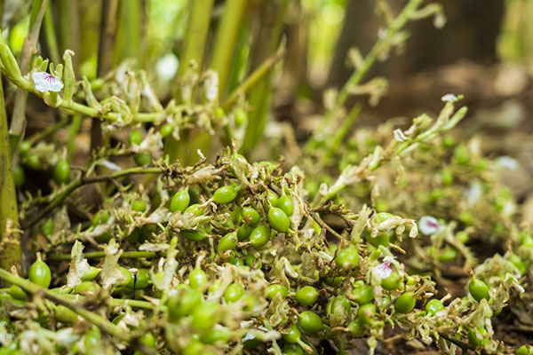

Aroma-led selection
Each item is chosen for the way it smells and cooks, not just how it looks in a pack.
About us
Idukki Spices is built for people who care about aroma, freshness, and flavour. We sell whole spices and practical blends that make everyday cooking more memorable.
Our approach
From green cardamom to bay leaves, the focus is simple: clean presentation, useful quantities, and spices that earn a regular place in your kitchen.
We keep the shop easy to browse, with clear prices, direct cart controls, and simple checkout steps.
Plantation view
These plantation visuals give a clearer sense of the landscape behind the flavour.

Our promise
Each item is chosen for the way it smells and cooks, not just how it looks in a pack.
Clear pack sizes keep the shopping decision quick and practical.
Visitors can review the cart, checkout, or ask questions before ordering.
What matters
We choose spices that bring depth to tea, sweets, rice dishes, curries, marinades, and broths.
Cardamom and mixed spices are priced clearly so you can add them directly to your cart.
Contact us any time for delivery questions, bulk orders, or spice recommendations.